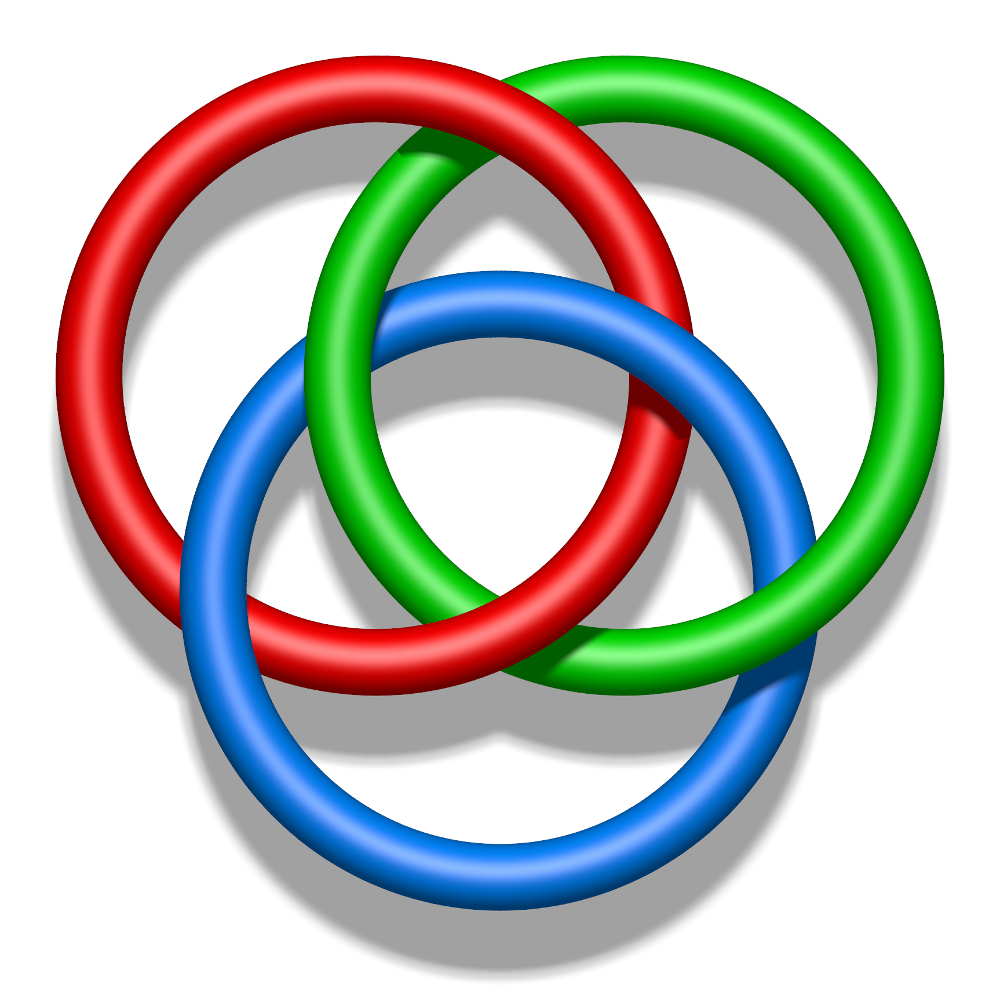

事件与概率
事件的运算
事件的包含和相等
同一试验下的两个事件\(A\)和\(B\)，如果\(A\)发生时B也发生，则称\(B\)包含\(A\)，记作\(A \subseteq B\)。如果\(A,B\)互相包含，则二者相等。
事件的互斥和对立
若两事件\(A\)和\(B\)不能再同一试验中同时发生，则称它们是互斥的。互斥事件的一个特例是对立事件，对于事件\(A\)，其对立事件\(\bar A\)为\(\{ \text{$A$不发生} \}\)。
事件的和（并）与加法定理
设两个事件\(A\)和\(B\)，定义新事件\(C\)为\(C = \{ \text{$A$发生，或$B$发生} \}\)，则称事件\(C\)为事件\(A\)与事件\(B\)的和，记作\(C = A + B\)。
概率论中的加法定理描述的则是：若干互斥事件之和的概率，等于各事件的概率之和。
全概率公式
设\(B_1, B_2, \cdots\)为有限或无限个事件，它们两两互斥且在每次实验中至少发生一个（mutually exclusive and collectively exhaustive），即 \[ \begin{gather} B_i B_j = \emptyset (i \ne j) \\ B_1 + B_2 + \cdots = \Omega \\ P(B_1 + B_2 + \cdots) = P(\Omega) = 1 \end{gather} \] 根据事件运算的性质，\(A = A \Omega = A B_1 + A B_2 + \cdots\)，由于\(B_1, B_2, \cdots\)两两互斥，则显然\(A B_1, A B_2, \cdots\)也两两互斥，故依据加法定理，有 \[ P(A) = \sum_i P(A B_i) = P(A B_1) + P(A B_2) + \cdots \] 再根据条件概率公式，有 \[ P(A) = \sum_i P(B_i) P(A | B_i) = P(B_1) P(A|B_1) + P(B_2) P(A|B_2) + \cdots \]
这便是全概率公式。
事件的积（交）
设两个事件\(A\)和\(B\)，定义新事件\(C\)为\(C = \{ \text{$A$，$B$都发生} \}\)，则称事件\(C\)为事件\(A\)与事件\(B\)的积，记作\(C = A B\)。
事件的差
设两个事件\(A\)和\(B\)，定义新事件\(C\)为\(C = \{ \text{$A$发生，$B$不发生} \}\)，则称事件\(C\)为事件\(A\)与事件\(B\)的差，记作\(C = A - B\)。
我们对事件引入了和、积、差、对立运算。显然，这些运算符在数字运算中成立的运算规律，不一定对事件运算成立，比如说\(A + A = A\)而非\(2 A\)（无意义），\(A A = A\)而非\(A^2\)（无意义），\((A - B) + B = A + B\)而不是\(A\)。
基于这些基本运算，我们也可以表示出更多的事件，比如：
| 表达式 | 含义 |
|---|---|
| \(ABC\) | 三者同时发生 |
| \(A B \bar C + A B \bar C + \bar A B C\) | 三者有且仅有两件发生 |
| \(A \bar B \bar C + \bar A B \bar C + \bar A \bar B C\) | 三者有且仅有一件发生 |
| \(A + B + C\) | 三者至少其中之一发生 |
条件概率与独立性
设两个事件\(A\)和\(B\)，且\(P(B) \ne 0\)，记\(P(A|B)\)为“在给定\(B\)发生的条件下\(A\)的条件概率”，则 \[ P(A|B) = \frac{P(AB)}{P(B)} \] 在计数测度之下，这个式子很好证明。记\(M_A\)为使得事件\(A\)发生的基本事件个数，记\(M_B\)为使得事件\(B\)发生的基本事件个数，记\(M_{AB}\)为使得事件\(A\)和事件\(B\)同时发生的基本事件个数，记\(M\)为所有基本事件个数，则 \[ P(A|B) = \frac{M_{AB}}{M_B} = \frac{M_{AB}/M}{M_B/M} = \frac{P(AB)}{P(B)} \]
两个事件的独立
设两个事件\(A\)和\(B\)，\(P(A)\)和\(P(A|B)\)可能是有差异的，这个差异便反映了二者之间的关联。而如果\(P(A) = P(A|B)\)，则称这两事件独立。根据条件概率的定义，两事件\(A\)、\(B\)独立时，有 \[ P(AB) = P(A) P(B) \] 我们往往是根据事件属性，而非根据以上公式，来确定事件的独立性。比如说在连续抛两次硬币的试验中，这两次试验的结果之间确实不应该有什么关联，我们自然而然地认为它们之间是相互独立的（相互独立同分布）。
有时我们会觉得所有的独立事件可能都来自于这样的多次相互独立同分布试验，但其实独立事件也可以来自一次试验，比如说从52张扑克牌中随机抽取一张，记事件\(A\)为抽中红桃花色、事件\(B\)为抽中数字6，则可以验证，这两个事件也是相互独立的。
相互独立与乘法定理
设\(A_1, A_2, \cdots\)为有限或无限个事件，如果从其中任意取出有限个\(A_{i_1}, A_{i_2}, \cdots, A_{i_m}\)，都有 \[ P(A_{i_1} A_{i_2} \cdots A_{i_m}) = P(A_{i_1}) P(A_{i_2}) \cdots P(A_{i_m}) \] 则称事件\(A_1, A_2, \cdots\)相互独立。概率论中的乘法定理描述的是：多个事件相互独立时，它们同时发生的概率，等于各自概率的乘积。
需要注意的是，多个事件之间两两独立并不意味着它们相互独立，比如在掷两次硬币的实验中，定义以下事件： \[ \begin{gathered} A：第一次为正， P(A) = 1/2 \\ B：第二次为反， P(B) = 1/2 \\ C：两次结果相同， P(C) = 1/2 \end{gathered} \] 则可以轻易验证三者两两独立，但是\(P(ABC) = 0 \ne 1/8 = P(A) P(B) P(C)\)。这三者的关系有如下图中的三个环：两两之间本可以相互分开（独立），但三者同在，便互相捆绑住了。
